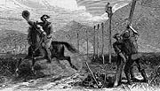

|
Less than ten years ago the "Pony Express" was new to this continent, though not to the Old World. Its use there has not been forgotten or abandoned; but its day is already nearly ended with us. It came into existence here as the fore-runner of the telegraph and the railroad: it is still used in the old countries in default of these more rapid means of communication and transportation. Three years after the pony first began to run express in America the harnessed lightning distanced him on his own track . . . The Overland Pony Express from the Missouri to the Pacific was established in 1859, and from its first inauguration was splendidly run, sometimes carrying letters from Atchison, Kansas, to Sacramento, California, a distance of about 2000 miles, in eight days -- that is, averaging two hundred and fifty miles per day. Once important dispatches -- election news, of course -- were carried from Saint Joseph's, Missouri, to Denver City, Colorado, 625 miles, in sixty-nine hours; the last ten miles being made in thirty-one minutes. The posts were originally 25 miles apart, and the steeds employed were the small, fleet, hardy Indian horses. The rider kept his pony on the full run, and when he reached a new station, whatever the hour of day or night, another messenger, ready mounted and waiting, took the little mail sack, struck spurs to his steed, and was off like the wind. Our centre engraving on this page is from a painting by George M. Ottinger, of Great Salt Lake City, who has finely illustrated the spirit of this age and this people in both the choice and the execution of his subject. The chosen scene of the picture is near Chimney Rock, on the North Platte River; the express rider is cheering the men who are raising the telegraph-poles. It adds to the interest of the picture that it represents an actual and frequently-recurring scene, as, in the summer of 1862 while the telegraph was in course of erection, the fitting by of the express boy was a daily sensation for the work-men. |